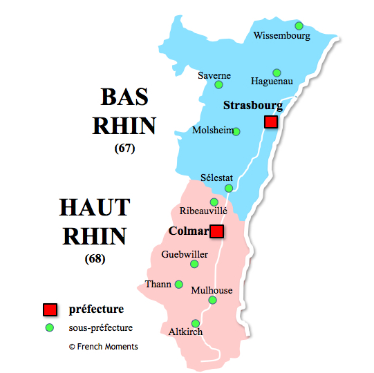

Départaments
La région Alsace est composée de deux départements :
- Le Bas-Rhin (67)
- Le Haut-Rhin (68)
Le chef-lieu de la région Alsace est Strasbourg, qui est également la préfecture du département du Bas-Rhin et la capitale européenne.

Villes
Les plus deux importants villes dans ce région sont:
Économie
L'économie de la région Alsace est diversifiée et dynamique, reposant sur plusieurs secteurs clés. Voici un aperçu des principaux aspects économiques de la région :
-
Industrie :
- Automobile : L'Alsace est un important centre de production automobile avec des entreprises comme Peugeot et Bugatti.
- Mécanique et métallurgie : Ces secteurs sont bien développés avec des entreprises de renom comme De Dietrich et Clemessy.
- Agroalimentaire : L'Alsace est célèbre pour ses produits alimentaires, notamment la choucroute, les vins, les bières (comme Kronenbourg), et les eaux minérales (Carola).
-
Viticulture :
- L'Alsace est réputée pour ses vins blancs, notamment les cépages Riesling, Gewurztraminer, et Pinot Gris.
- La Route des Vins d'Alsace est une attraction touristique majeure, renforçant l'économie locale par le biais de l'œnotourisme.
-
Tourisme :
- L'Alsace attire de nombreux visiteurs grâce à ses charmants villages (comme Colmar et Riquewihr), ses marchés de Noël, et ses sites historiques (Strasbourg avec sa cathédrale et ses institutions européennes).
- Le patrimoine naturel, avec les Vosges et le Rhin, offre des opportunités pour le tourisme vert et les activités de plein air.
-
Technologie et Innovation :
- La région est un centre d'innovation avec de nombreuses entreprises high-tech et des pôles de compétitivité comme le pôle Fibres-Énergivie et le pôle Véhicule du Futur.
- Strasbourg, avec son université et ses institutions de recherche, joue un rôle clé dans le développement technologique et scientifique.